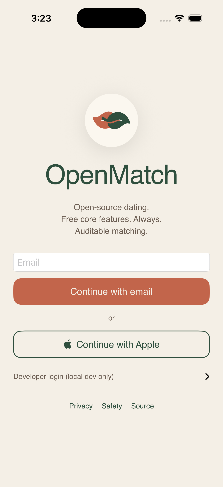
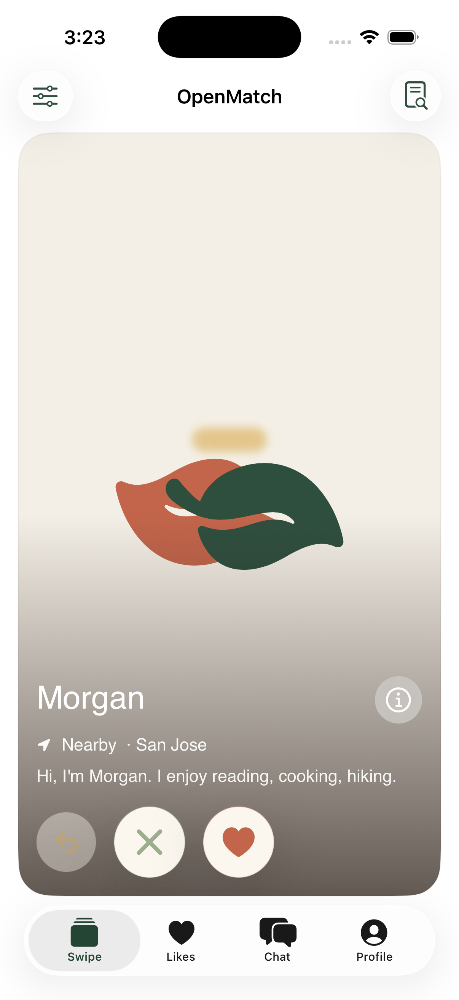
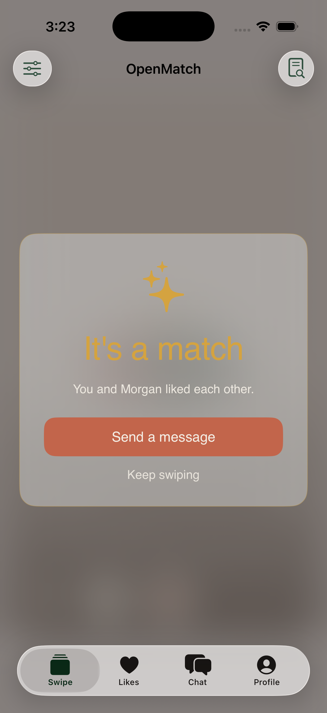
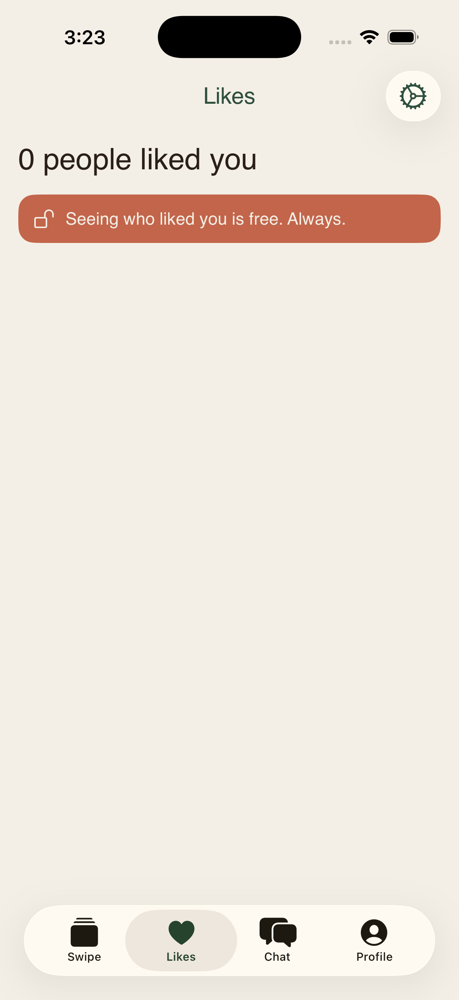
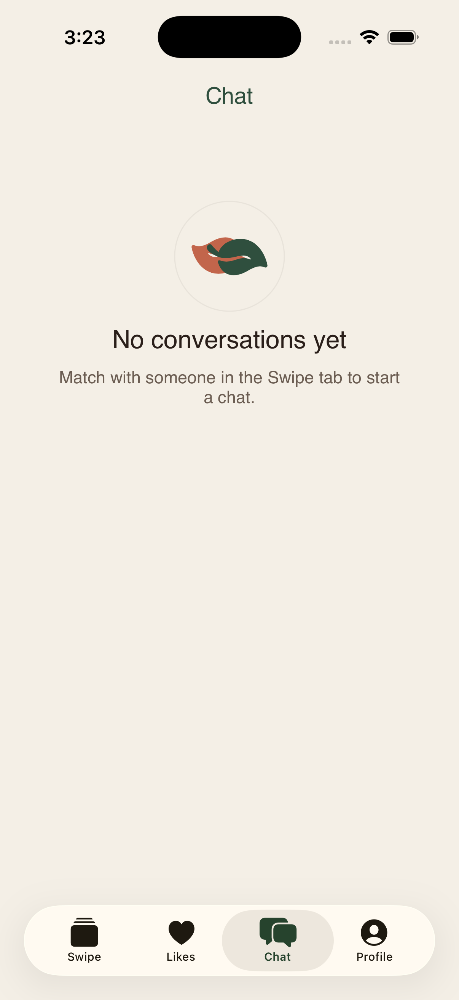
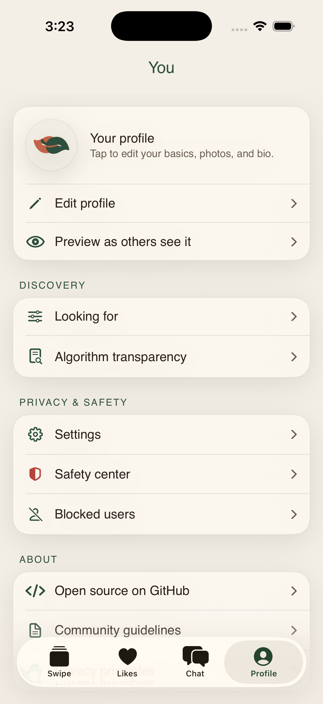
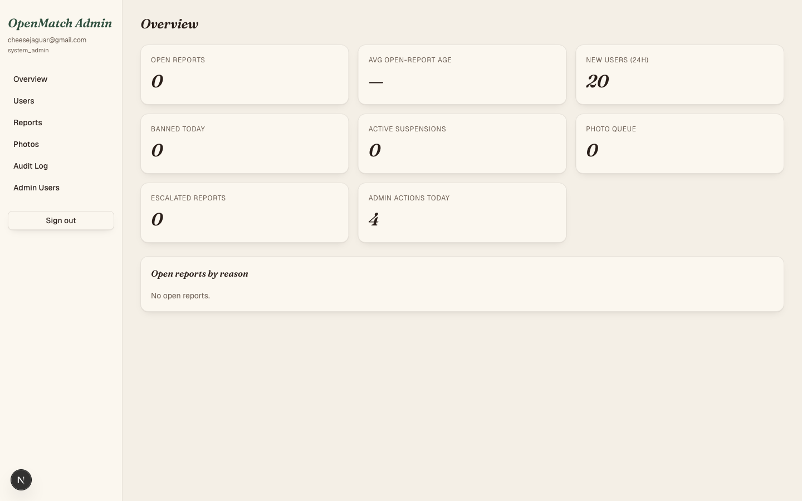
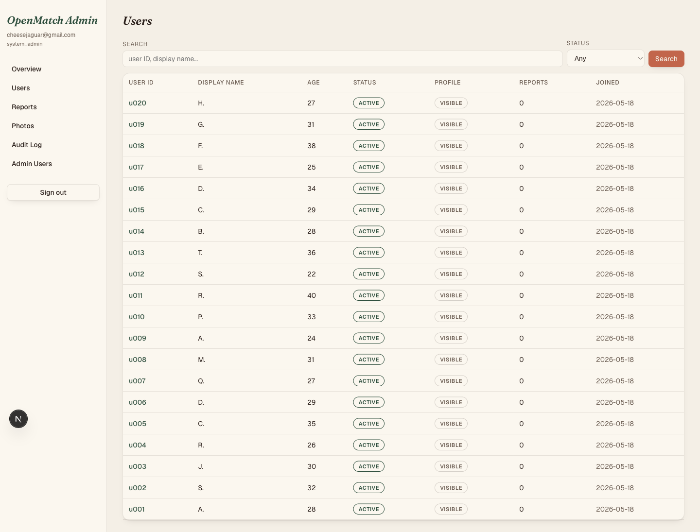

iOS — consumer app
DEBUG-only launch envs OPENMATCH_AUTO_LOGIN,
OPENMATCH_INITIAL_TAB, and OPENMATCH_FORCE_MATCH
now ship in the iOS target so screenshot sessions can re-run cleanly.

01Welcome
Regression check — the staggered reveal, moss "OpenMatch" wordmark, terracotta CTA, moss-outlined Apple sign-in, and the leaf-heart mark are all unchanged.

02Swipe deck
"Morgan" front card with clean Botanic photo placeholder. Back-card preview shows only its photo layer; no text overlay bleeds through.
displayMode: .preview — the summary text + action row
+ edge glow + bottom gradient are all skipped. Visible behind the
front card: just the photo (or Botanic placeholder) at
scaleEffect(0.96) / opacity(0.7).

03Match overlay
Regression check — espresso scrim, honey "It's a match" in Fraunces italic bold, terracotta "Send a message", ghost "Keep swiping". Particle burst layer still fires on entry.

04Likes
Bone background, moss "Likes" nav title in Fraunces italic, terracotta "free, always" banner. Tab bar moss-tinted.
OMScreen;
.navigationTitle("Likes") replaced with
.omNavTitle("Likes") (Fraunces italic moss
principal toolbar slot); previous person.fill
avatars in LikeRow swapped for
BotanicPlaceholder(.avatar(56)). Rows now use
OMShape.card(OMRadius.md) on
surfaceElevated.

05Chat
Bone background, moss "Chat" nav title, empty-state with a 96pt Botanic placeholder and the conversational copy.
List replaced with
ScrollView { LazyVStack { OMSection } }. Empty
state replaced the SF symbol bubble with a
BotanicPlaceholder(.avatar(96)). Match rows now
use OMRow-style padding with the Botanic
placeholder leading, name in Geist semibold, last message
in Geist regular muted.

06Profile
Four OMSection cards on bone: profile summary +
Discovery + Privacy & Safety + About. Section headers in
Fraunces italic moss small-caps. Sign-out button in safetyRed.
List replaced with custom
OMSection + OMRow stacks. Each row
carries a moss-tinted leading icon (safety center uses
safetyRed). Avatar swapped to
BotanicPlaceholder(.avatar(64)).
Other restyled screens (not captured)
These views were also fully restyled in this pass but require deeper
navigation than the screenshot launch-args can reach. All follow the
same OMScreen / OMSection / OMRow
pattern visible in Profile (#06) and Chat (#05).
- Settings — Form replaced with
OMSectionstacks; toggles viaOMToggle(moss tint), navigation rows viaOMRowwith chevron. - Edit profile — Form replaced;
OMSection("Photos")wraps a 3-up grid with a footer caption;OMSection("Basics")wraps named labeled fields;OMSection("Bio")wraps a multiline TextField. - Looking for — All four preference groups (Age range, Distance, Goals, Incoming likes) rendered with
OMStepper,OMPicker,OMToggle, andOMSegmented. - Algorithm transparency — Hero title in Fraunces italic; weights as
OMSectionwith terracotta-tinted ProgressView per row; "never use" list asOMSectionwith safetyRed icons. - Safety center — All sections converted to
OMSection; tips render as icon+text rows; crisis resource links useOMRowwith chevron. - Blocked users — Empty state shows the Botanic placeholder; populated list uses dividers between
OMRows; Unblock usesOMGhostButtonStyle. - Conversation — Message bubbles recolored: outgoing on moss with bone text, incoming on
surfaceElevatedwith a hairline stroke; input bar has a top divider and a terracotta send button. - Onboarding likes-visibility step — Segmented control replaced with
OMSegmented(capsule selector with moss active state).
Admin dashboard
Admin was already on-brand from PR #26 and didn't change in this pass. Screenshots from the round-1 review remain accurate.

01Overview
Metric tiles with Fraunces italic numerals on bone.

02Users
Search + status filter; 20 seeded users.